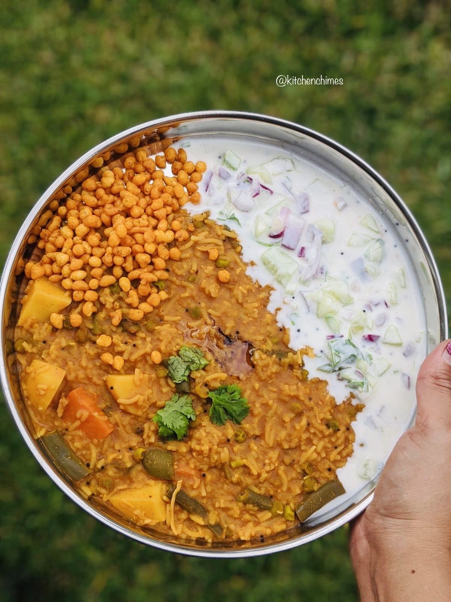

Bisi Bele Bath

Description :
Another lesser known, highly underrated and nutritious-densely packed tasty food :)
- It is very convenient to eat.
- It fills you up.
- It is rich in proteins, which means it helps build muscle.
- The chili in it speeds up your metabolism and helps you lose weight.
- The spices used for cooking Bisi bele baths are good for your digestive system and boost immunity.
- Bisi bele bath is a perfect food for the winter months because it balances stomach heat.
- Bisi bele bath can get rid of coughs and colds.
- Bisi bele bath is a delicious dish that can make you feel better in the winter season.
Now the ingredients :
- 2 tablespoons ghee or oil
- 1 teaspoon mustard seeds
- 1 teaspoon cumin seeds
- A pinch of asafoetida (hing)
- A few curry leaves
- 1 finely chopped onion
- 1 cup mixed vegetables (carrots, peas, beans, bell peppers, etc.)
- 1 cup rice
- 1/2 cup toor dal (split pigeon peas)
- 3 cups water
- 2 tablespoons Bisi Bele Bath powder
- Salt to taste
For the tempering :
- 1 tablespoon ghee
- 1 teaspoon mustard seeds
- 1 dry red chili
- A few curry leaves
- A pinch of asafoetida (hing)
- Serve with:
Raita
Finally the steps :
- Heat 2 tablespoons of ghee or oil in a pressure cooker or large pot.
- Add 1 teaspoon of mustard seeds and let them splutter. Then, add 1 teaspoon of cumin seeds, a pinch of
asafoetida (hing), and a few curry leaves.
- Add 1 finely chopped onion and sauté until it turns translucent.
- Add 1 cup of mixed vegetables like carrots, peas, beans, and bell peppers. Sauté for a few minutes.
- Rinse 1 cup of rice and 1/2 cup of toor dal (split pigeon peas) and add them to the pot.
- Add 3 cups of water, 2 tablespoons of Bisi Bele Bath powder (readily available spice mix), salt to taste,
and mix well.
- Close the pressure cooker lid or cover the pot and cook for 3-4 whistles in the pressure cooker or until
the rice and dal are cooked and tender.
- Once the pressure is released, open the lid and give it a good stir. The consistency should be slightly
thick and porridge-like.
- For the tempering, heat 1 tablespoon of ghee in a small pan. Add 1 teaspoon of mustard seeds and let them
splutter. Then, add 1 dry red chili, a few curry leaves, and a pinch of asafoetida (hing).
- Pour the tempering over the Bisi Bele Bath and mix well.
- Let the flavors meld for a few minutes before serving.
- Serve the hot and flavorful Bisi Bele Bath with a side of raita.
Enjoy your delicious Bisi Bele Bath, a comforting and wholesome one-pot meal!
Back to home page